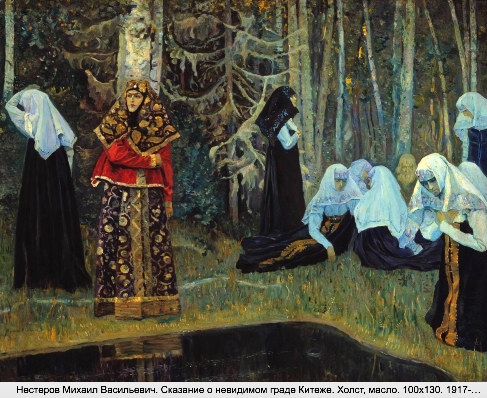

A traditional ritual song expressing grief, often performed at weddings or funerals. There was a special profession in a Russian village: a lamenter, a woman who performed a lament as a hired performer.

Here is a link to the recording of a Russian folk wedding lament reenactment in Latvia. Fragment of film "Morning in the bride's house. Russian marriage in Latgalia". Film director Natalia Stratanovich. Culture of Russian orthodox residents in North Vidzeme (Latvia). Folk ensemble "Iljinskaja pjatnica" (Riga. Latvia) performance .